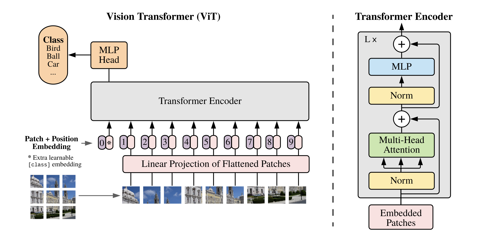
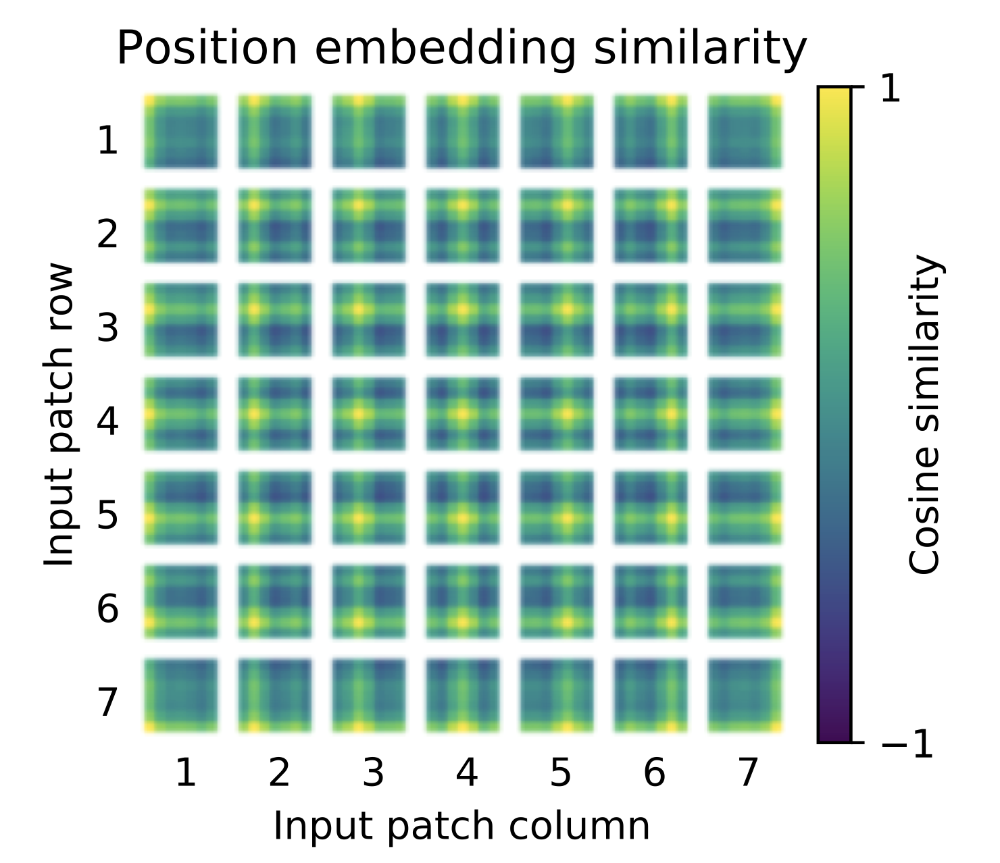

ViT
ViT（Vision Transformer）是一种基于Transformer的图像分类模型，它是由Google于2020年提出的。 ViT使用Transformer将图像分成固定大小的图块，并将图块表示为一组固定大小的特征向量，然后使用全连接层来对特征向量进行分类。
创新点
全Transformer结构
文章结论
- Transformer相较于CNN结构，缺少一定的平移不变性和局部感知性，因此在数据量不充分时，很难达到同等的效果。
- 大量的训练样本时，结果会优于CNN。用大规模数据集进行预训练后，再使用迁移学习的方式应用到其他数据集上，效果比CNN更好。
网络结构
网络整体结构如下

分块嵌入
由于Transformer中网络的输入为（N，D）的二维矩阵，其中N表示输入词向量数量，D表示维度。但是图像为HWC的三维格式， 所以需要先把三位图像转化为（N，D）的二维表示。
作者首先将图像从宽高维度将图像分为边长为p的图像块。如此原始的HWC的图像可以划分为 HW/(PP) 个图像块。令
N = HW/(PP)
现在每个块的维度是(PPC),但我们需要的输入特征维度是D，这需要对图像块进行 Embedding。具体就是一次线性变换。 所以图中的Linear Projection of Flattened Patches就是先对图像块转为一维，然后通过线性映射得到长度为D的向量。 我们称该向量为图块嵌入（Patch Embedding）
位置编码
为了保持输入图像patch之间的空间位置信息，还需要对图像块嵌入中添加一个位置编码向量，如上式中的Epos所示， ViT的位置编码直接用的一维可学习的位置嵌入变量，原先是论文作者发现实际使用时2D并没有展现出比1D更好的效果。
需要注意的是，图中可能让你感觉位置向量和图块嵌入是concat，但实际是进行的加操作。所以嵌入位置向量的特征和图块嵌入的维度是相同。
此外，对encoder的输入包含一个额外可学习的embedding，即图中所代表的特征表示，是特殊字符cls表起始。他是一个(1D)的向量。
在后续的实验中，作者将学习完的位置编码进行可视化如下图所示：

可以看到网络是可以学出不同位置的信息。
MLP
你可能对Encoder中的MLP有一点疑惑，不应该是Feed Forward吗？两者是相同的，具体来说，此处的MLP实现如下
class Mlp(nn.Layer):
def __init__(self,
in_features,
hidden_features=None,
out_features=None,
act_layer=nn.GELU,
drop=0.):
super().__init__()
out_features = out_features or in_features
hidden_features = hidden_features or in_features
self.fc1 = nn.Linear(in_features, hidden_features)
self.act = act_layer()
self.fc2 = nn.Linear(hidden_features, out_features)
self.drop = nn.Dropout(drop)
def forward(self, x):
# 输入层：线性变换
x = self.fc1(x)
# 应用激活函数
x = self.act(x)
# Dropout
x = self.drop(x)
# 输出层：线性变换
x = self.fc2(x)
# Dropout
x = self.drop(x)
return x
包含了两个全连接层，激活函数采用GeLU。
MLP Head
得到输出后，ViT中使用了 MLP Head对输出进行分类处理，这里的 MLP Head 由 LayerNorm 和两层全连接层组成，并且采用了 GELU 激活函数。
评价
总的来说，ViT是vision Transformer中的一片开创性论文，在图像分类领域的表现已经超越了许多传统的卷积神经网络，取得了很好的效果。 它的特点可以总结如下：
-
处理长序列：ViT使用Transformer将图像分成固定大小的图块，并使用多头注意力机制和位置编码来处理序列中的长距离依赖关系，从而提高模型的表达能力和泛化能力。
-
可扩展性：ViT的输入图像可以是任意大小，因此可以适应不同尺寸的图像，同时ViT中的编码器和解码器可以堆叠多个层，从而提高模型的表达能力和泛化能力。
-
可解释性：ViT中的注意力权重可以用于解释模型的决策过程，从而提高模型的可解释性。
-
训练代价高：由于ViT使用Transformer对图像进行处理，需要处理大量的图块，因此训练代价比传统的卷积神经网络要高。